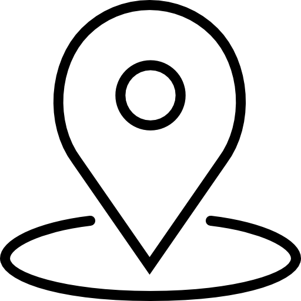

Horizons Verticaux : L'Architecture Redéfinie par Dominique Perrault
Découvrez l'univers visionnaire de l'architecte contemporain : Dominique Perrault

Plongez dans l'univers novateur de Dominique Perrault à la Fondation Cartier. Explorez son œuvre révolutionnaire, des iconiques Bibliothèque Nationale de France aux stades olympiques, témoignant d'une créativité sans limites.
Découvrez des lignes audacieuses et des espaces infinis qui redéfinissent notre paysage urbain. Laissez-vous inspirer par l'ingéniosité d'un maître bâtisseur repoussant sans cesse les frontières de l'architecture moderne.
Oeuvres principales
Rejoignez nous
Fondation Cartier, 261 Bd Raspail, 75014 Paris

du 13 avril au 23 juin 2024

Tous les jours de 11h à 20h, sauf le lundi. Nocturne le mardi, jusqu'à 22h. La fermeture des salles débute à 19h45 (21h45 les mardis).

Tarifs : Plein tarif 11€ Tarif réduit 7,50€ Réduction 13 - 25 ans 5€ Fondation Cartier Pass 18€ - 50€ Moins de 13 ans, Laissez-passer annuel, carte Icom, carte de presse, carte d'invalidité, Fondation Cartier Pass, Etudiants Gratuit